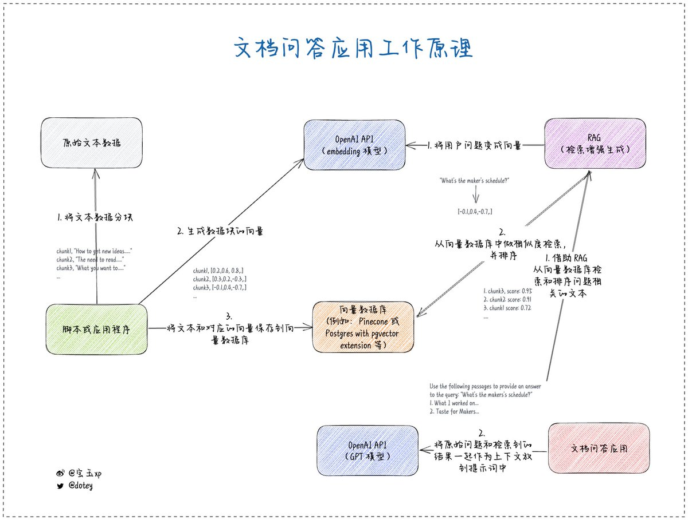

问：请问这个观点对不对：“对于搭建企业本地知识库来说，比如使用 RAG 方式，国内几家大模型都可以胜任（用 gpt4的话有点杀鸡用牛刀的意思），关键在于应用端的调教”
先说结论：我觉得没毛病，GPT 3.5 的能力就足够胜任绝大部分场景了，但 GPT-4 不是杀鸡牛刀，而是如虎添翼甚至化腐朽为神奇。
再展开说说细节，以及说说用 GPT-4 是不是杀鸡牛刀。
RAG 的原理其实不复杂，先对文档预处理方便检索，通常会将文档分块，使用 Embedding 将文本向量化处理，提问时，对问题也做 Embedding，找出相关文档，然后交给大语言模型整理返回给用户。根据检索到的内容让大语言总结返回给用户这事，GPT 3.5 就能做的挺不错。
但是这里有很多细节，比如怎么分块，比如怎么检索，比如怎么交给大语言模型生成，这里就不展开讲了，我也只是知道一些皮毛。我只说我知道的部分和大语言相关的部分。
首先是如何借助大语言模型检索？
如果你把用户提的问题直接做 Embedding 扔给向量数据库去检索，通常效果不好，因为用户的问题千奇百怪，语义混乱，有时候自己都不知道自己在说什么，有时候一段话里两三个问题。
所以这时候就需要借助大语言模型对用户的提问预处理，去提炼出核心问题，去分解出多个子问题。这种任务就对大语言模型的能力有要求了，GPT-4 提炼出来的效果肯定是比 GPT-3.5 提炼出来的好很多，结果也好很多。
然后是借助大语言模型做 Ranking（排序）
当你检索出来结果后，可能会有很多结果，但是其中有些跟用户问题相关，有些不那么相关，所以需要对检索出来的结果做一个排序，只返回最相关最重要的信息给大语言模型做总结。
这又是一个体现大语言模型能力的场景，GPT-3.5 也能做，但是 GPT-4 做的效果会更好一些。
最后是借助大语言模型对检索出来的结果汇总
当你把检索的内容交给大语言模型的时候，如何根据用户的问题和检索出来的资料，汇总出来用户希望得到的答案也是体现大语言能力的地方。
而且大语言模型还有个致命缺陷就是幻觉，它可能会胡说八道，明明检索出来的结果并不太相关，但是它可能言之凿凿让你信以为真。这时候如果大语言模型的能力强，就能最大程度的减少幻觉，让生成的结果更准确。
另外还有一点，RAG 不仅仅是会用到你自己的知识库，还可以用到它本身的知识库，所以模型本身知识库的多寡，也会影响生成的结果，GPT-4 相对于 GPT-3.5 的知识库要大不少，所以在回复时，更容易涵盖到问题的各个方面。
所以说，你用 GPT-3.5 也能胜任，但是用 GPT-4 可以做的更好，并不是简单的杀鸡牛刀！
先说结论：我觉得没毛病，GPT 3.5 的能力就足够胜任绝大部分场景了，但 GPT-4 不是杀鸡牛刀，而是如虎添翼甚至化腐朽为神奇。
再展开说说细节，以及说说用 GPT-4 是不是杀鸡牛刀。
RAG 的原理其实不复杂，先对文档预处理方便检索，通常会将文档分块，使用 Embedding 将文本向量化处理，提问时，对问题也做 Embedding，找出相关文档，然后交给大语言模型整理返回给用户。根据检索到的内容让大语言总结返回给用户这事，GPT 3.5 就能做的挺不错。
但是这里有很多细节，比如怎么分块，比如怎么检索，比如怎么交给大语言模型生成，这里就不展开讲了，我也只是知道一些皮毛。我只说我知道的部分和大语言相关的部分。
首先是如何借助大语言模型检索？
如果你把用户提的问题直接做 Embedding 扔给向量数据库去检索，通常效果不好，因为用户的问题千奇百怪，语义混乱，有时候自己都不知道自己在说什么，有时候一段话里两三个问题。
所以这时候就需要借助大语言模型对用户的提问预处理，去提炼出核心问题，去分解出多个子问题。这种任务就对大语言模型的能力有要求了，GPT-4 提炼出来的效果肯定是比 GPT-3.5 提炼出来的好很多，结果也好很多。
然后是借助大语言模型做 Ranking（排序）
当你检索出来结果后，可能会有很多结果，但是其中有些跟用户问题相关，有些不那么相关，所以需要对检索出来的结果做一个排序，只返回最相关最重要的信息给大语言模型做总结。
这又是一个体现大语言模型能力的场景，GPT-3.5 也能做，但是 GPT-4 做的效果会更好一些。
最后是借助大语言模型对检索出来的结果汇总
当你把检索的内容交给大语言模型的时候，如何根据用户的问题和检索出来的资料，汇总出来用户希望得到的答案也是体现大语言能力的地方。
而且大语言模型还有个致命缺陷就是幻觉，它可能会胡说八道，明明检索出来的结果并不太相关，但是它可能言之凿凿让你信以为真。这时候如果大语言模型的能力强，就能最大程度的减少幻觉，让生成的结果更准确。
另外还有一点，RAG 不仅仅是会用到你自己的知识库，还可以用到它本身的知识库，所以模型本身知识库的多寡，也会影响生成的结果，GPT-4 相对于 GPT-3.5 的知识库要大不少，所以在回复时，更容易涵盖到问题的各个方面。
所以说，你用 GPT-3.5 也能胜任，但是用 GPT-4 可以做的更好，并不是简单的杀鸡牛刀！

coze 的英文版和中文版确实是个绝佳的例子，说明模型能力对结果的影响👍
• • •
Missing some Tweet in this thread? You can try to
force a refresh